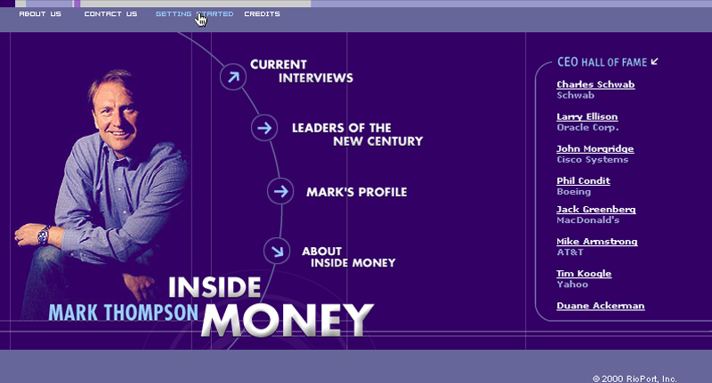

Marketing and Promotional Sites
Creative Development
2000-2019
I started my Web Developer career making technical support walk throughs for Earthlink Network. I was It started as a way for me to walk people through setting up software that I didn’t have access to while on calls. I was a Mac tech and our support environment was exclusively windows. My tutorials helped many of the techs I worked with walking people through software they had never seen. It wasn’t long before I was asked to create them for the public site.

Over the years I’ve designed and coded many marketing sites for a variety of individuals and organizations. Photoshop is my goto for image optimization and alteration. I have advanced vector graphic skills I use to make custom icons and svgs. I also use Photoshop and Illustrator in my art and in hobbies outside of Web Design including CNC laser cutting and silk screen.